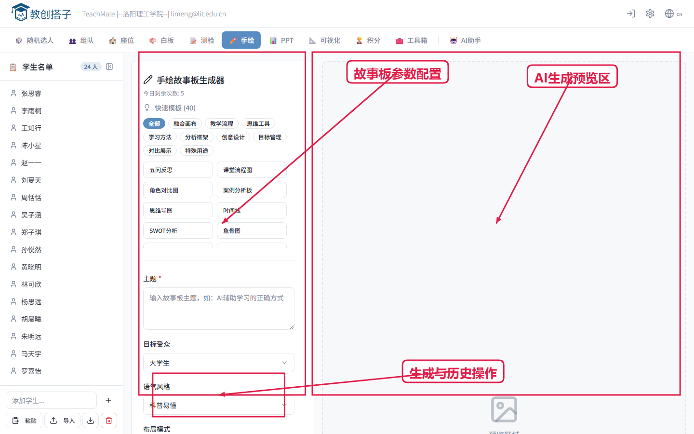
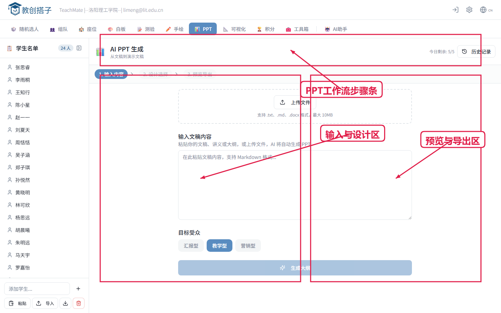
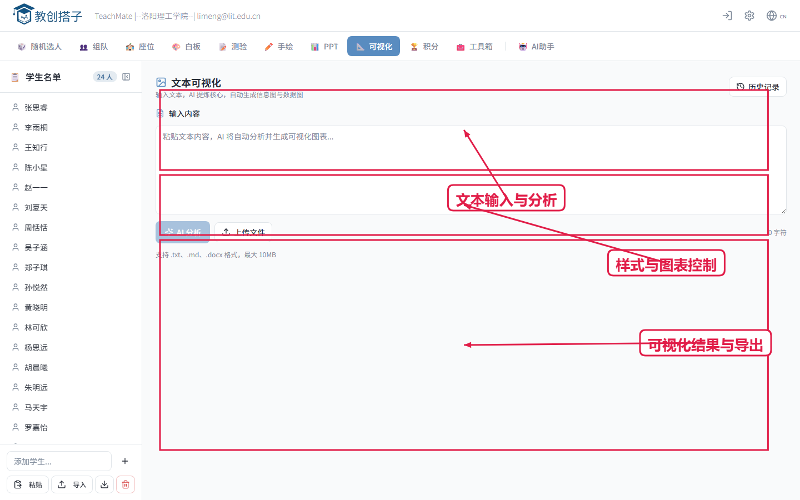

第1页 开场与系统定位
讲解词：这是教创搭子的主工作台。今天我们按“课前准备-课中互动-课后留档”这条主线演示，45分钟后每位老师都能独立跑通一次完整课堂流程。
提问点：你当前课堂中最耗时的组织动作是什么？


版本：2026-03-18
定位：每页可直接口播，含讲解词、提问点、演示时长。
讲解词：这是教创搭子的主工作台。今天我们按“课前准备-课中互动-课后留档”这条主线演示，45分钟后每位老师都能独立跑通一次完整课堂流程。
提问点：你当前课堂中最耗时的组织动作是什么？
讲解词：先加载班级再开展课堂活动，组织效率会显著提升。名单支持粘贴导入、文本导入和班级库复用。
提问点：你们的名单维护流程来自教务导出还是手工维护？
讲解词：随机点名支持去重抽取、语音播报和弹窗显示，适合导入提问、复盘抽问和课堂唤醒。
提问点：你会选择完全随机，还是随机且不重复？

讲解词：先自动分组再拖拽微调，兼顾效率与教学经验。可快速形成讨论组和项目队。
提问点：你常用的分组策略是均分、异质分组还是按任务分组？

讲解词：排座支持教室、机房、会议等多场景，支持禁用座位、走道、拖拽换位，并可与座位签到联动。
提问点：你更常用考试排座还是小组协作排座？


讲解词：教师创建互动板后，学生扫码提交卡片，教师端实时汇总展示，适用于观点收集与课堂共创。
提问点：你希望白板更偏“收集答案”还是“组织讨论”？

讲解词：题库、会话发布、作答统计和导出在一个流程内完成。建议课中小测，课后直接导出结果复盘。
提问点：你最关注测验中的哪个指标：参与率、正确率还是错因分布？

讲解词：通过积分、徽章和排行榜实现过程性评价，适合个人激励和小组竞赛。
提问点：你更倾向奖励个人成长，还是奖励团队协作？

讲解词：工具箱用于课中即插即用，推荐先掌握倒计时、二维码、投票、课堂指令卡四件套。
提问点：哪三个工具你会在下周课堂优先上线？

讲解词：输入主题后快速生成故事板，适合情境导入、案例讲解和项目汇报。
提问点：哪门课最适合先用故事板开场？

讲解词：从文本到大纲再到PPT导出，显著缩短备课时间，可按受众与模板快速切换风格。
提问点：你最希望AI帮你节省哪一步：写大纲、排版还是出图？

讲解词：将长文本自动结构化并转成信息图，适合政策解读、章节总结、数据表达。
提问点：你有哪些文字材料可以直接转为可视化讲义？

讲解词：请每组完成“名单-点名-分组-排座-白板/测验-导出”的完整闭环，并用1分钟分享落地方案。
提问点：如果明天上课，你会先部署哪三个模块？
本页为讲师口播与实操任务，不强制截图。